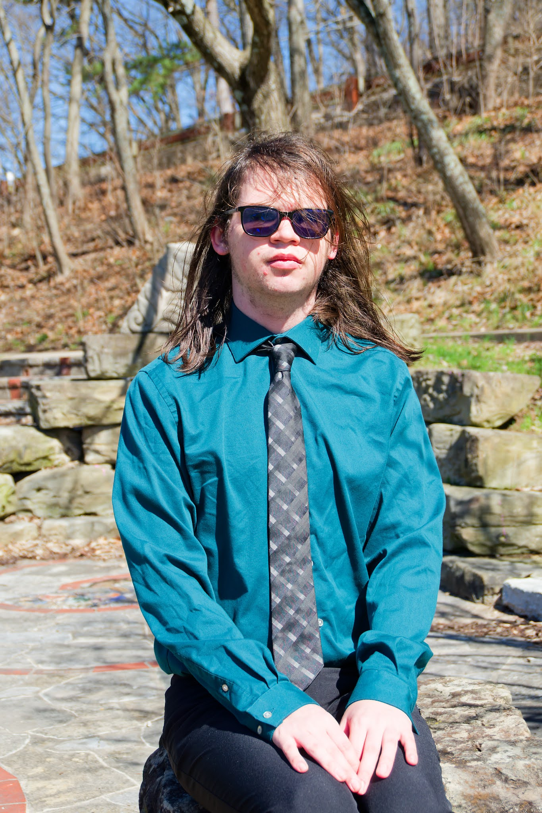

Flappy Prototype
Mark Alexander
Alexis Mertzke
Teen Anime & Manga Club
Braxton Penrod
CIT Lab
Music
Secular Focus
Video Games
HoYoLab
Trip to Ypsilanti
Welcome!
Instructions:
Mark Alexander
Family
Being the little brother in the family meant one big thing, I wanted to be just like my big brother. If he didn't do homework, I didn't do it, that caused problems later on and he wasn't the best role model, and I needed to be forced away from the mindset of being a duplicate of him to actually be my own person. I still do like some of the things he does, and I do feel like I'm subconsciously trying to copy him (which is 20% of the reason why I want to go away for college).
Addendum
Select positive influences
- I still enjoy writing, even if it has deviated.
- I am attending the UVCC because he did.
- I enjoy Death Battle and thinking of Death Battles with him.
- I wouldn't have done D&D, E-Sports, and Marching Band if it weren't for him.
- I probably wouldn't enjoy Pokemon if it weren't for him.
Select negative influences
- Work came easily to him in school, so I never saw him do any.
- He stresses his head off and I generally started mimicing him.
- Him wanting to take a gap year almost made me want to take one.
Alexis Mertzke
Peers
I would say Alexis Mertzke is my first good friend, while I had the people I perceived as friends, but were not good at the task, or my former best friend, who we just kind of drifted away. Alexis and I resonated as friends for no good reason, other than being put together on a project because she couldn't chew gum. I felt comfortable enough to confide in her about things like my struggle with my sexuality and stress. And though we don't contact each other very often anymore, I still consider her a good friend.
Teen Anime & Manga Club
Peers
The Group of friends that I've made over the golden age of the Piqua Public Library's Teen Anime & Manga Club of wildly different peoples is the reason I'm so willing to put myself out there and try to make friends and participate more vocally in the clubs that I am in. It also gave me a network of peers who are willing and wanting to talk to me about the most random of things.
Braxton Penrod
Peers
He was my friend in middle school, and he seemed like a really nice guy in those grades; however, as a middle-schooler, I was a terrible judge of character. He did things that impacted my grades, causing me to get in trouble for being distracted during a group project, among being a generally bad group member on other group projects. He also did things that inherently made me uncomfortable, telling other people secrets or overall falsehoods to get me in trouble with teachers, and pushing to try to be my friend despite the fact that he's aware that he crossed my boundaries too many times. He taught me what I don't want in a peer, and to enforce my boundaries strictly.
CIT Lab
School
The CIT lab here at the UVCC taught me a lot about myself among other things. It gave me a community of people I knew I could talk to, whilst also teaching me boundaries. It is also the biggest reason I want to go to college, seeing the websites I coded in deployment makes me so happy, and I believe that web design is my passion.
Music
Media
Like a Star Trek fan inserting Star Trek into whatever they talk about, I learned a lot of phrasings both consciously and unconsciously from the music I listen to (E.G. "All but ..."). I also have music as, partly a way to ground myself, from distraction, though the music can distract me as well as it can ground me.
Secular Focus
Religion
I'll prelude this with the fact that I do have a religion, and I tend to have a soft aggression to certain things outside of mine, but it's like when someone's telling you something you don't want to hear and you cover your ears saying "lalalalala", except I just sit there quietly blocking it out. Whenever I say something religious, it's usually exaggeration or of the sorts, I don't let my religion affect my actions, I just have it as the rock that I can always use if needed, but just sits off to the side. I feel like not letting it control me has helped me just be myself rather than a model of what an unknown deity wanted their kin to look like.
Video Games
Media
Having the access and playing the video games I've played has granted me access to so many conversational topics and writing concepts that I wouldn't have had otherwise, and thinking about them grants me a minute of respite in the swiftly growing pressure of the world. It also gives me more things I can continue to stem my personality from, as a sponge. It can also help me calm down when necessary. I also enjoy the influence on my life and how being in the Piqua Super Smash Brothers Ultimate team allowed me to be more comfortable with talking about random topics casually.
HoYoLab
Media
The official Genshin Impact Social Media, among other things, it's similar in function to social medias like Amino (2020s) in that people aren't that afraid to say things about fictional characters that may make people uncomfortable. But it has helped me be more comfortable being myself, because if a random person on the internet is able to say something that bold on the internet, I can be a little bit more honest with the people around me.
Trip to Ypsilanti
Family
Though my memory always stands as being foggy, especially back before 2020, there was a trip to Michigan that my family and I took that I have ~2 trinkets still of, and I still think is impacting me to this day, and that's when they took me to Hell and Ypsilanti, MI, Where they went to college. I still fondly have positive connotations to the thought of the trip, I do believe that that trip is a strong part of why I want to go to Eastern Michigan.
